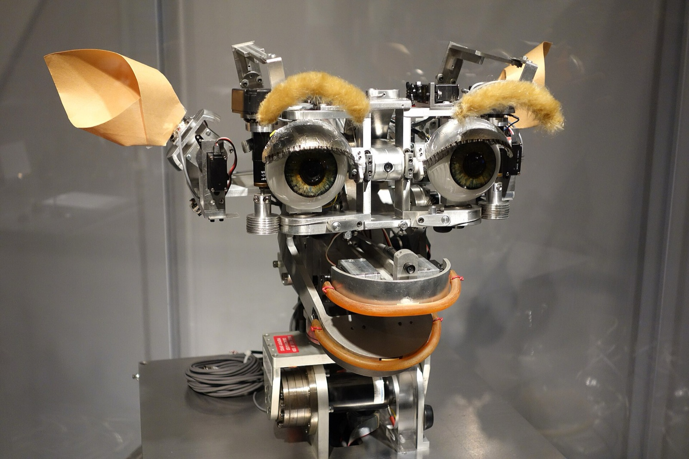
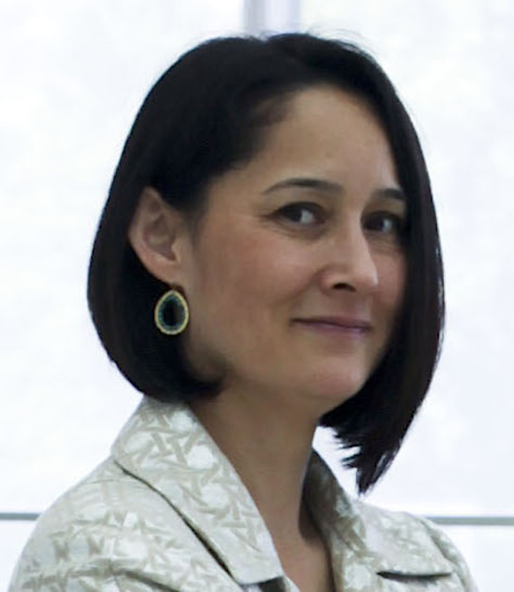
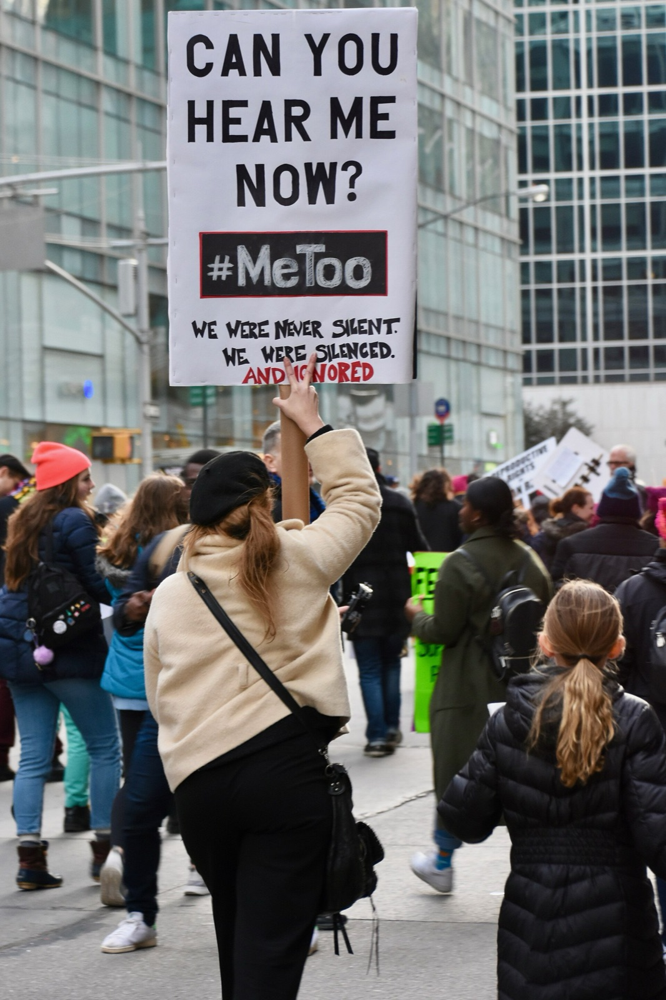
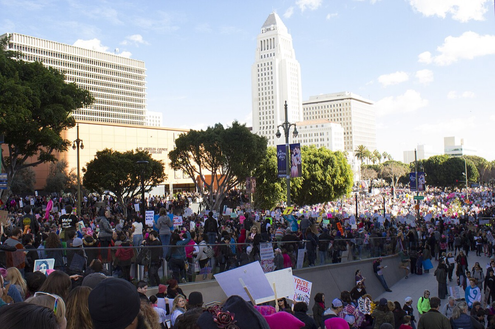
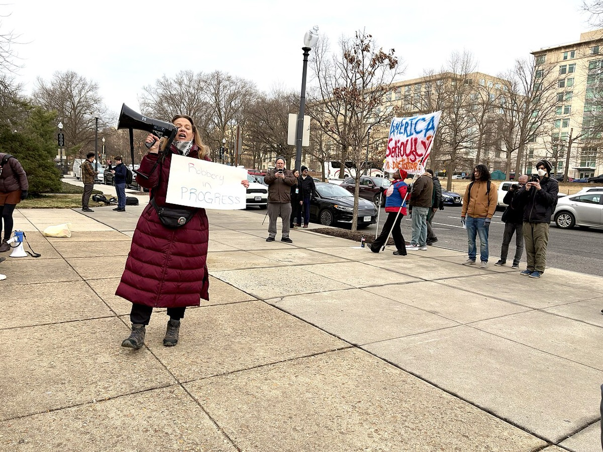

Chapter 1: Voice, Naming, and the Origins of the Field
Chapter 2: Performing the Self Online
Chapter 3: Gender on Display
Chapter 5: Gender, Power, and Digital Harms
Chapter 6: Gender in the Machine

Option A“Kismet, 1993-2000, view 2 - MIT Museum - DSC03711” by Daderot, via Wikimedia Commons (CC0)
Option B“2010 Cynthia Breazeal 4641804653” by jeanbaptisteparis from Cambridge, MA, USA, via Wikimedia Commons (CC BY-SA 2.0)Option C“Margaret Hamilton - restoration” by Adam Cuerden, via Wikimedia Commons (Public domain)Option D“Two women operating ENIAC (full resolution)” by Unidentified U.S. Army photographer, via Wikimedia Commons (Public domain)Option E“WAC telephone operators operate the Victory switchboard during the Potsdam Conference in their headq” by Unknown authorUnknown author or not provided, via Wikimedia Commons (Public domain)Option F“SoftBank pepper” by Tokumeigakarinoaoshima, via Wikimedia Commons (CC0)Chapter 7: Futures: Voice, Advocacy, and Activism

Option A“Can You Hear Me Now? -MeToo (39787332552)” by Alec Perkins from Hoboken, USA, via Wikimedia Commons (CC BY 2.0)Option B“Women's March Washington, DC USA 36” by Ted Eytan, via Wikimedia Commons (CC BY-SA 2.0)
Option C“Women's March Los Angeles, Januat 21, 2017” by Larissa Puro/USC Institute for Global Health, via Wikimedia Commons (CC BY 2.0)
Option D“Protest outside OPM, 2025-02-03, woman with megaphone” by Joe Flood, via Wikimedia Commons (CC BY 2.0)Option E“It's better to be angry together - 1” by Philip N. Cohen, via Wikimedia Commons (CC BY-SA 2.0)All images are public domain or openly licensed (CC0, CC BY, CC BY-SA). Each keeps its own license as credited. CC BY-SA applies to that image only.


.jpg){kind=link}


_(cropped).jpg){kind=link}


.jpg){kind=link}


.jpg){kind=link}